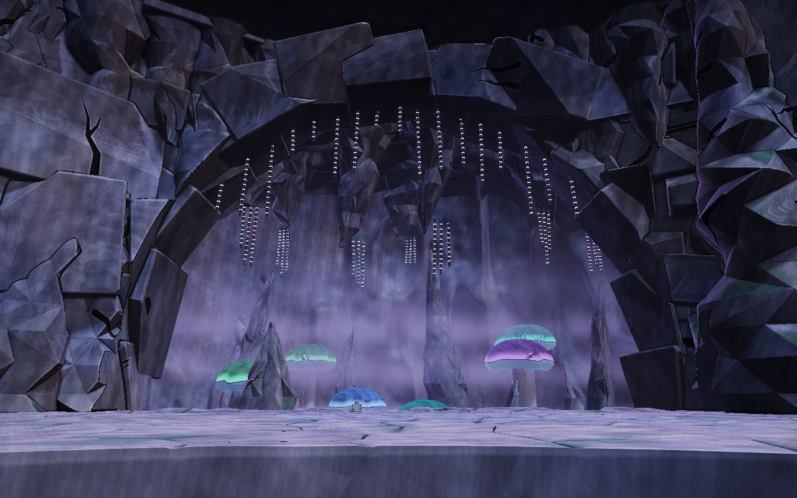
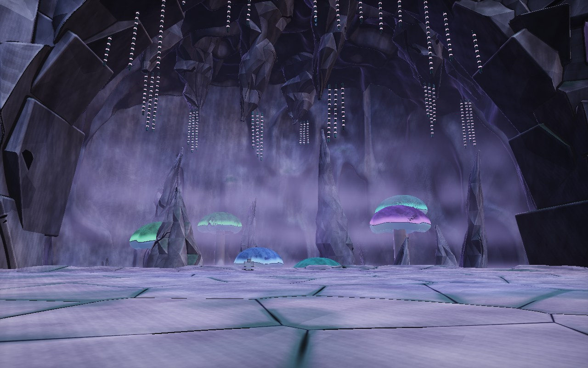
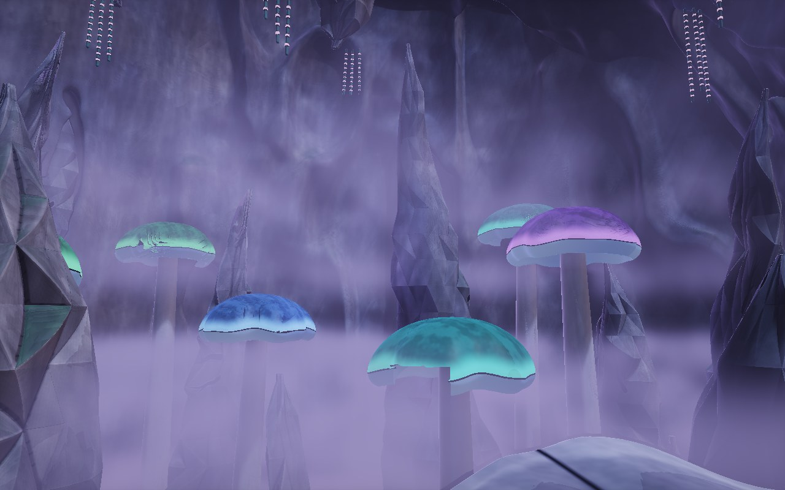
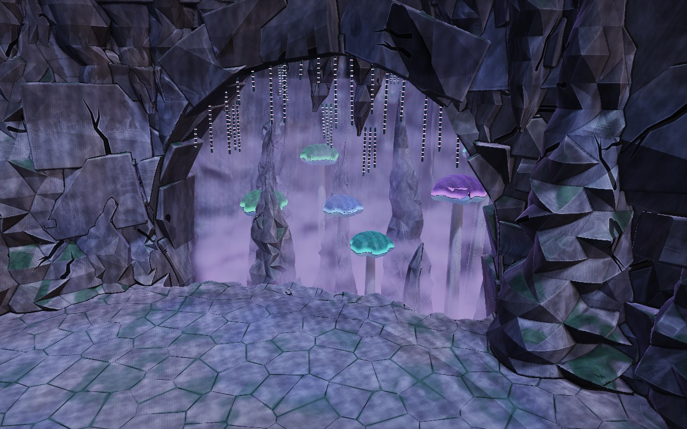
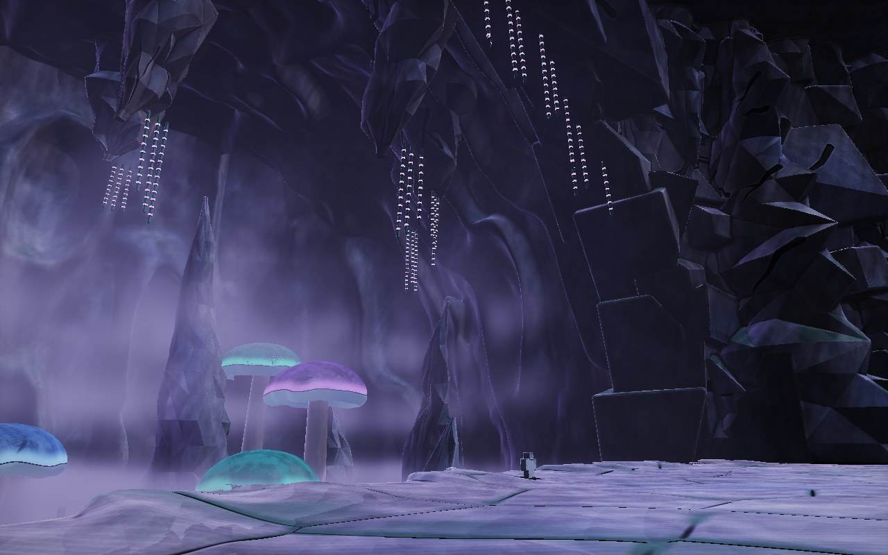
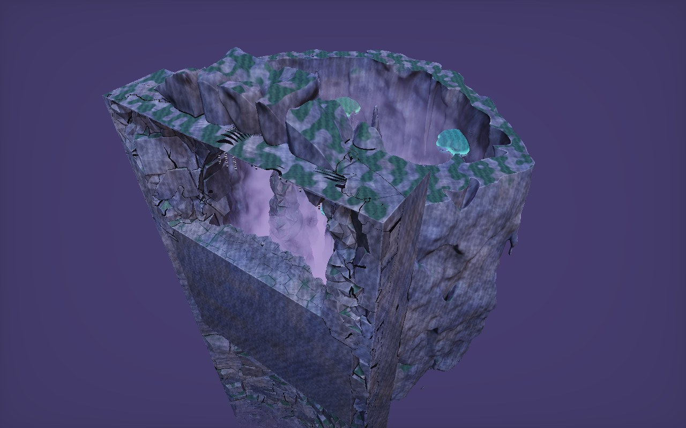
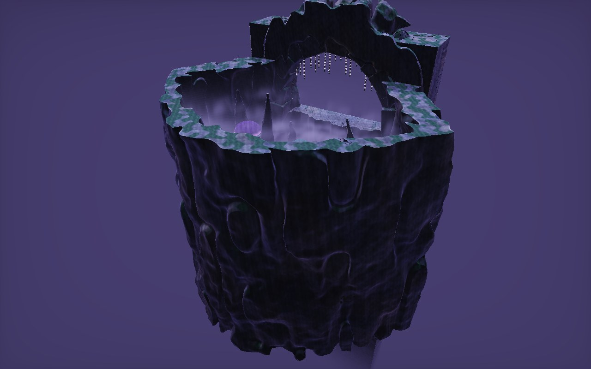
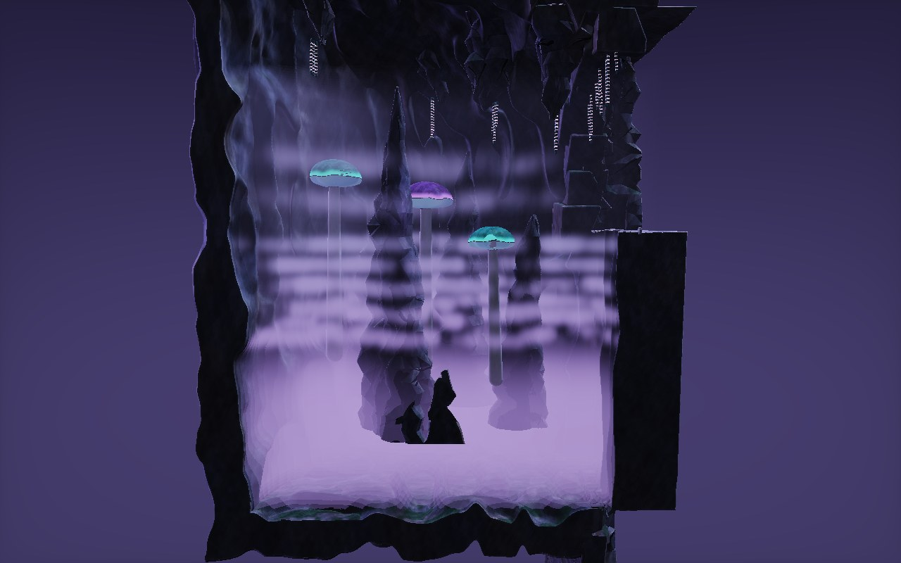
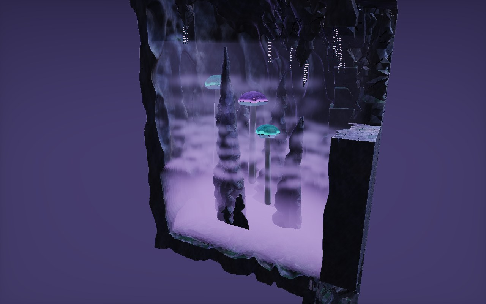

<title>The Far Side Cave</title>
<meta name="claude:viewport-fit-sides" content="cover">
<link rel="stylesheet" href="https://fonts.googleapis.com/css2?family=Baloo+2:wght@600;800&family=Atkinson+Hyperlegible:wght@400;700&display=swap">
<style>
/* Layout: the mist as the hero, views from the lobby, then the cave with its roof off and cut in half, then notes. Matches the canopy hole's page. */
:root {
  --bg: #0c1016; --card: #141a22; --line: #26313d; --fg: #e8eef2; --muted: #9aa8b4; --accent: #c49bff;
  --display: "Baloo 2", "Trebuchet MS", sans-serif; --body: "Atkinson Hyperlegible", system-ui, sans-serif;
  color-scheme: dark;
}
body { background: var(--bg); color: var(--fg); font-family: var(--body); font-size: 15px; line-height: 1.5; }
main { max-width: 1280px; margin: 0 auto; padding-block: 28px 44px; padding-left: max(16px, env(safe-area-inset-left, 0px)); padding-right: max(16px, env(safe-area-inset-right, 0px)); display: flex; flex-direction: column; gap: 24px; }
.eyebrow { font-size: 12px; letter-spacing: 0.1em; text-transform: uppercase; color: var(--muted); margin: 0; }
h1 { font-family: var(--display); font-weight: 800; font-size: 36px; line-height: 1.05; margin: 2px 0 6px; text-wrap: balance; }
h2 { font-family: var(--display); font-weight: 600; font-size: 20px; margin: 0 0 8px; }
.lede { margin: 0; color: var(--muted); max-width: 74ch; }
.hero { position: relative; border: 1px solid var(--line); border-radius: 12px; overflow: hidden; background: #05070a; aspect-ratio: 8 / 5; max-width: 100%; }
.hero canvas { width: 100%; height: 100%; display: block; }
.hero .tag { position: absolute; left: 12px; bottom: 10px; font-size: 12px; color: var(--fg); background: rgba(5,7,10,0.65); padding: 3px 10px; border-radius: 999px; }
.hero button { position: absolute; right: 12px; bottom: 10px; font: inherit; font-size: 12px; color: var(--fg); background: rgba(5,7,10,0.65); border: 1px solid var(--line); padding: 3px 12px; border-radius: 999px; cursor: pointer; }
.hero button:focus-visible { outline: 2px solid var(--accent); outline-offset: 2px; }
.grid { display: grid; grid-template-columns: repeat(2, minmax(0, 1fr)); gap: 14px; }
@media (max-width: 760px) { .grid { grid-template-columns: 1fr; } }
figure { margin: 0; background: var(--card); border: 1px solid var(--line); border-radius: 12px; overflow: hidden; min-width: 0; }
figure img { display: block; width: 100%; height: auto; aspect-ratio: 8 / 5; object-fit: cover; }
figcaption { padding: 10px 14px 12px; font-size: 14px; color: var(--muted); }
figcaption b { color: var(--fg); font-weight: 700; }
.cols { display: grid; grid-template-columns: repeat(2, minmax(0, 1fr)); gap: 20px; }
@media (max-width: 760px) { .cols { grid-template-columns: 1fr; } }
ul { margin: 0; padding-left: 18px; display: flex; flex-direction: column; gap: 5px; }
</style>

<main>
  <header>
    <p class="eyebrow">Far side · cave and mouth · option C · round 6 · 2026-11-04</p>
    <h1>The far side cave</h1>
    <p class="lede">The cave and its mouth with the new wall and spires in place, dressed as option C: giant glowing mushrooms rising out of the mist. The mouth is an even arch 280 studs wide and 185 high, now framed by broken blocks. The last four views lift the cave's roof off and cut it in half, so you can see the whole space.</p>
  </header>
  <div class="hero">
    <canvas id="mist" width="800" height="500" aria-label="Looping animation of the layered mist drifting through the cave, seen from the cliff edge"></canvas>
    <span class="tag">From the cliff edge · mist drifting</span>
    <button type="button" id="pause" aria-pressed="false">Pause</button>
  </div>
  <section class="grid" aria-label="Views">
    <figure><figcaption><b>From the spawn rock.</b> The mouth at the end of the far bridge.</figcaption></figure>
    <figure><figcaption><b>From the bridge's landing.</b> The mushrooms glow through the mist between the spires.</figcaption></figure>
    <figure><figcaption><b>At the cliff's edge.</b> What you see standing at the barrier.</figcaption></figure>
    <figure><figcaption><b>From above the far side.</b> The wall, the floor's edge and the drop.</figcaption></figure>
    <figure><figcaption><b>From the side.</b> The frame of broken blocks round the arch.</figcaption></figure>
    <figure><figcaption><b>Roof off, from the lobby side.</b></figcaption></figure>
    <figure><figcaption><b>Roof off, from behind.</b> Looking back at the mouth.</figcaption></figure>
    <figure><figcaption><b>Cut in half.</b> The whole depth, down to the floor about 300 studs below the cliff.</figcaption></figure>
    <figure><figcaption><b>Cut in half, at an angle.</b> How far back it goes.</figcaption></figure>
  </section>
  <section class="cols">
    <div>
      <h2>In this cave</h2>
      <ul>
        <li>The mouth: an even arch, 280 by 185 studs, framed by broken blocks</li>
        <li>The hall: widening past the mouth, about 380 studs deep</li>
        <li>Nine rising cave spires, seven hanging, and six of the approved giant mushrooms, with bead vines</li>
        <li>The canopy hole's mist: five drifting layers below the cliff, two thinner ones higher up, and a haze over the bottom and far end</li>
      </ul>
    </div>
    <div>
      <h2>Not shown, and open</h2>
      <ul>
        <li>The barrier: invisible, so it isn't drawn. It covers the whole opening and runs into the wall at both sides</li>
        <li>The far side's floor, weathered stone with damp moss, is still your call</li>
      </ul>
    </div>
  </section>
</main>

<script>
(() => {
  const canvas = document.getElementById("mist"), g = canvas.getContext("2d");
  const img = new Image(), COLS = 6, FW = 800, FH = 500, N = 24;
  const reduce = window.matchMedia("(prefers-reduced-motion: reduce)").matches;
  let frame = 0, dir = 1, playing = !reduce, last = 0;
  const btn = document.getElementById("pause");
  const draw = () => { if (img.naturalWidth) g.drawImage(img, (frame % COLS)*FW, Math.floor(frame/COLS)*FH, FW, FH, 0, 0, FW, FH); };
  img.onload = () => { draw(); requestAnimationFrame(tick); };
  img.src = "evidence/far-side-cave/cave/mist-anim.jpg";
  // Plays forward and back so the drift loops without a jump.
  function tick(now) {
    if (playing && now - last > 120) {
      last = now;
      frame += dir;
      if (frame >= N - 1 || frame <= 0) dir = -dir;
      draw();
    }
    requestAnimationFrame(tick);
  }
  btn.textContent = playing ? "Pause" : "Play";
  btn.onclick = () => { playing = !playing; btn.textContent = playing ? "Pause" : "Play"; btn.setAttribute("aria-pressed", String(!playing)); };
})();
</script>
